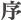
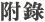

--自序 張序
第一節 總釋宗通與說通--證第一義諦
第二節 宗通概說
第三節 說通概說
第四節 法師與僧寶
第一節 禪宗之宗通--不聞而聞、不說而說
第二節 藉教悟宗
第三節 禪宗三關真實不虛
第四節 法相唯識宗之藉教通宗
第五節 大乘宗通見道之歧路
第一目 常見
第二目 斷見
第三目 自性見
第四目 邪見與外道見
第五目 宗通歧路之結論
第六節 宗通首重實踐
第一節 宗通有六通
第二節 三乘菩提之異同
第三節 為戒慧直往菩薩說悟後起修之道
第四節 三乘無學應迴向第一義諦
第五節 為已悟菩薩說應修一切種智
第六節 為初入地菩薩說修道及大乘光明三昧
第七節 漸入諸地--由初地至十地
第一節 教授學人立正知見
第二節 教作功夫準備見性
第三節 剋期取證--精進共修
第四節 汰除因緣不具者
第五節 當授一切種智--無生法忍
第六節 身教重於言教
第七節 護持了義正法--摧邪顯正
第一節 宗說二通不離八識心王所生一切法
第二節 輪迴與解脫之三種緣起
第三節 二乘菩提與如來藏
第四節 大乘佛法之精髓以如來藏為根本唯一佛乘
第五節 捨識用根之辨
第六節 宗通與胎昧
第一節 宗通非禪定
第二節 宗門無念心體非是定心
第三節 宗通之究竟須具四法
第四節 宗通之退與不退
第五節 宗通與五陰盡
第六節 橫出三界與漸出三界--解脫果
第七節 成佛--大菩提果
第一節 律宗在佛法中之定位
第二節 天臺宗在佛法中之定位
第三節 密宗在佛法中之定位
第四節 三論宗在佛法中之定位
第五節 俱舍宗在佛法中之定位
第六節 淨土宗在佛法中之定位
第七節 禪宗在佛法中之定位
第八節 華嚴宗在佛法中之定位
第九節 法相唯識宗在佛法中之定位
第十節 阿含經在佛法中之定位
第一節 宗門證悟不得違教
第二節 教門弘揚不得違宗
第三節 斥狂禪與狂密
第四節 佛教不應分宗立派--全面修證的佛法
第五節 欲求二通，當求真善知識
第六節 慎莫盜法以免重罪
佛教正覺同修會 同修發願文
古今中外，錯悟之人如麻似粟，每以常見外道所說靈知心，認為真心；或以虛空之勝性能量為真如，或認物質四大元素藉冥性（靈知心）能成就吾人色身及知覺，或認初禪至四禪中之了知心為不生不滅之涅槃心。此皆非通宗者之見地。復有錯悟之人一向主張「宗門與教門不相干」，此即尚未通達宗門之人。宗門與教門互通不二，宗門所證者乃真如佛性，故教門與宗門不二。作者以宗教二門互通之見地，細說「宗通與說通」，欲擇明師學法之前，允宜先讀。